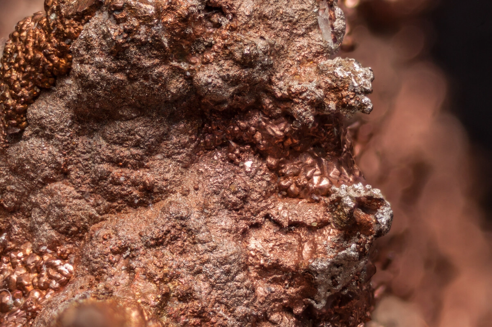

Copper
Copper lumps from Chaghi
Copper-bearing ore is supplied as lumps for direct ore feed, blending and trading programs. Commercial terms should be set against fresh lot assay, sizing and moisture, with penalties agreed for deleterious elements where applicable.
Reference: an SGS-referenced sample from Chaghi reported 0.740% Cu in the submitted material (PKS2333078, AAS). Contract ranges vary by source block and upgrade step.
- Typical range: assay-led (lot dependent)
- Form: lumps (screened, buyer sizing on request)
- Buyer checks: Cu%, moisture, silica, sulphur, impurities
- Use: smelter feed, blending and copper ore trading
- Documentation: assay report, weight slips, lot photos
